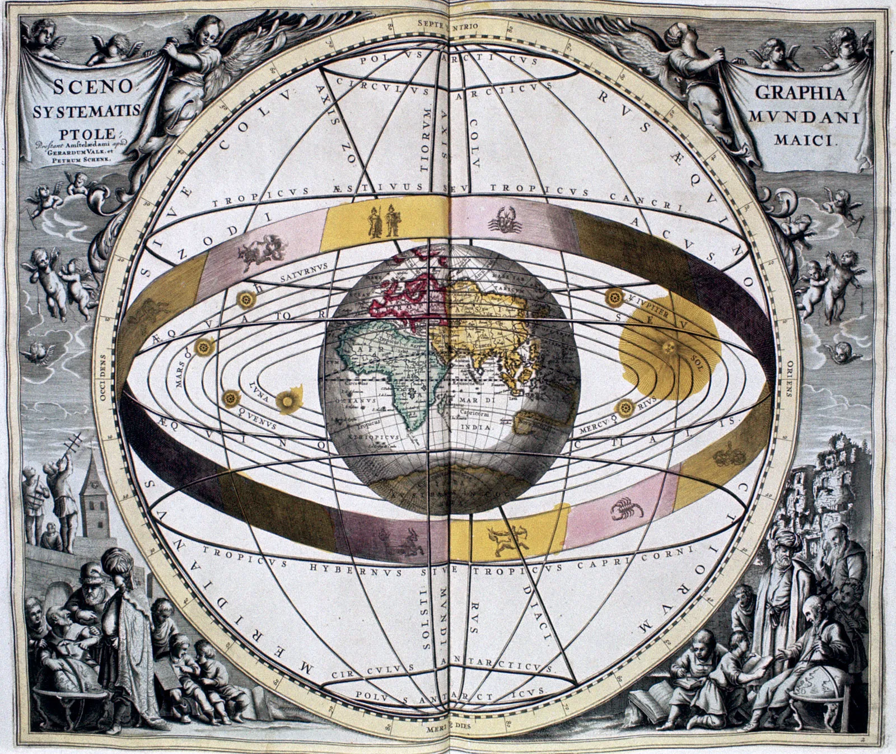

This is Ptolemy, a Greek Astronomer that came up with the theory that the Solar System Geocentric. A Geocentric Solar System means that every planet, moon, and the sun revolve around the Earth. However it wasn't until Galileo found moons orbiting Jupiter disproving his theory. Then during the period of Renaissance Astronomy, two astronomers named Tycho Brahe and Johannes Kepler refined the proposal made by Copernicus that the Solar System is in fact heilocentric, meaning Earth is one of several planets that orbit. Now, while this disproves the fact that everything in the Galaxy orbits the Earth, it doesn't disprove that the Earth is flat, think about it.
